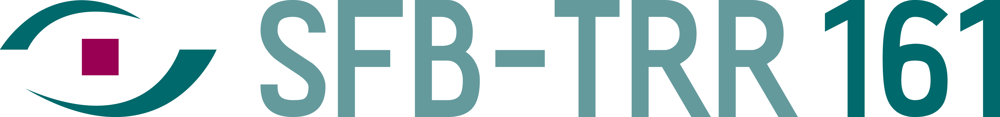

| 09:00 - 09:15 | Welcome (Kuno Kurzhals)
|
| 09:15 - 10:00 | Session 1 (Session Chair: TBD) (each: 10 min. talk + 5 min. questions)
|
| 10:00 - 10:30 | Coffee Break |
| 10:30 - 11:30 |
Keynote by Barbara Tversky (Stanford University and Columbia University)
Thinking with the Eye, the Hand, and the Page.
For more information about the talk and the speaker, please check the keynote section.
|
| 11:30 - 12:15 | Session 2 (Session Chair: TBD) (each: 10 min. talk + 5 min. questions)
|
| 12:15 - 12:30 | Closing |
Submission Process: Authors are invited to submit original work complying with the ETRA SHORT PAPER format (max. 8 pages, plus any number of additional pages for references, max. 150 words abstract). ETVIS uses the Precision Conference System (PCS) through ETRA 2026 to handle the submission and reviewing process.
NEW THIS YEAR: We include an additional category of paper submissions: position/road map papers about ETVIS related topics. In contrast to the regular research papers, this type should foster discussion and envision potential future directions for the research in our field.
Guidelines & Policies: Please read and follow the ACM Policy on Authorship regarding the use of Generative AI tools and technologies in ACM published Work. Also ensure that the Author Guidelines (for SIG sponsored events [sigconf]) are met prior to submission.
Publishing: All accepted papers will be published by ACM as part of the ETRA Workshop Proceedings (in ACM DL). Starting January 1, 2026, ACM will fully transition to Open Access. All ACM publications, including those from ACM-sponsored conferences, will be 100% Open Access. Authors will have two primary options for publishing Open Access articles with ACM: the ACM Open institutional model or by paying Article Processing Charges (APCs). With over 2,600 institutions already part of ACM Open, the majority of ACM-sponsored conference papers will not require APCs from authors or conferences (currently, around 76%). Authors from institutions not participating in ACM Open will need to pay an APC to publish their papers, unless they qualify for a financial waiver. To find out whether an APC applies to your article, please consult the list of participating institutions in ACM Open and review the ACM Policy on APC Waivers for Financial Hardship . Keep in mind that waivers are rare and are granted based on specific criteria set by ACM. Understanding that this change could present financial challenges, ACM has approved a temporary subsidy for 2026 to ease the transition and allow more time for institutions to join ACM Open. The subsidy will offer:
| Paper Submission Due (Deadline extended) | Mar 05, 2026 |
| Notification | Mar 23, 2026 |
| Camera Ready | Mar 30, 2026 |
| Workshop | June 1, 2026 |
University of Stuttgart
Germany
University of Applied Sciences
Chur, Switzerland
Technical University of Munich
Germany
Palacký University Olomouc
Czech Republic
Johannes Kepler University
Linz, Austria
University of Applied Sciences
Chur, Switzerland
University of Stuttgart
Germany
Chemnitz University of Technology
Germany
University of Stuttgart
Germany
Fabian Beck
University of Bamberg
Germany
Tanja Blascheck
University of Stuttgart
Germany
Pawel Cybulski
Adam Mickiewicz University
Poland
Nina Gehrer
University of Tübingen
Germany
Patrick Gralka
University of Stuttgart
Germany
Weidong Huang
University of Technology Sydney
Australia
Merve Keskin
University of Salzburg
Austria
Peter Kiefer
ETH Zurich
Switzerland
Karsten Klein
University of Konstanz
Germany
Lars Lischke
Elsevier
Netherlands
Thies Pfeiffer
Hochschule Emden-Leer
Germany
Tobias Schreck
Graz University of Technology
Austria
Anjul Kumar Tyagi
Stony Brook University
United States
Michaela Vojtechovska
Palacký University Olomouc
Czech Republic
